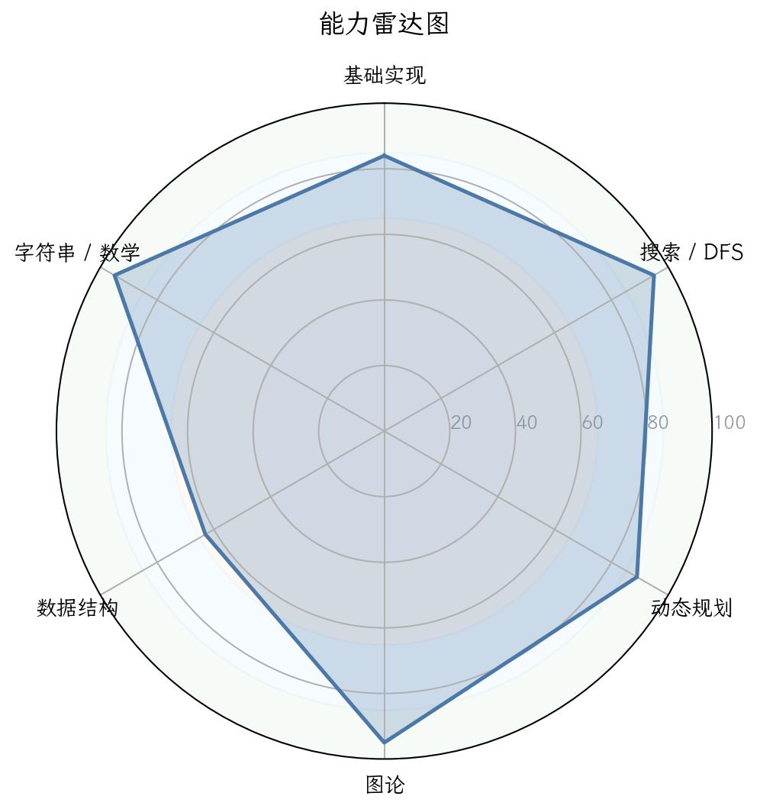
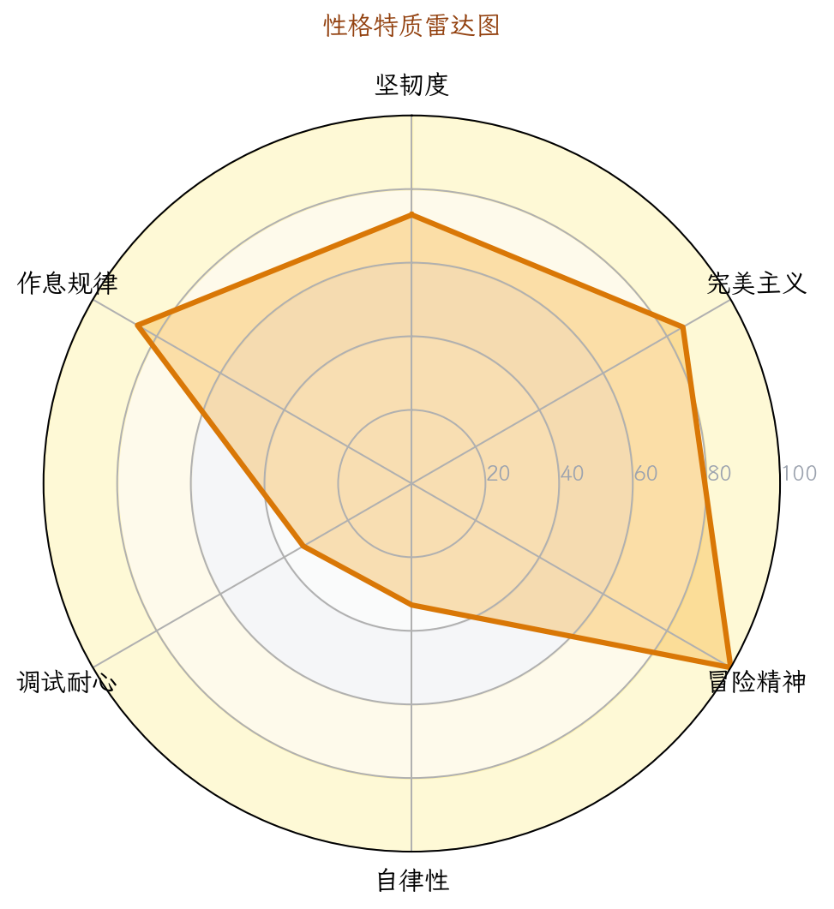
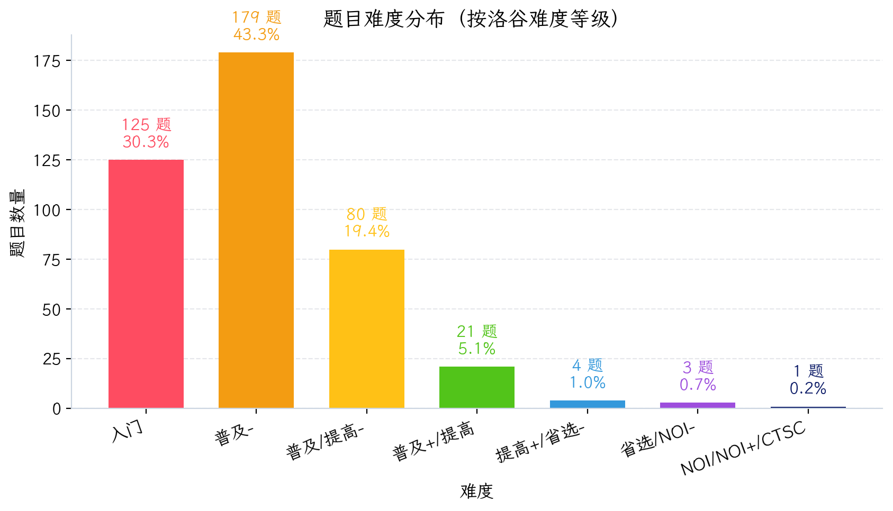
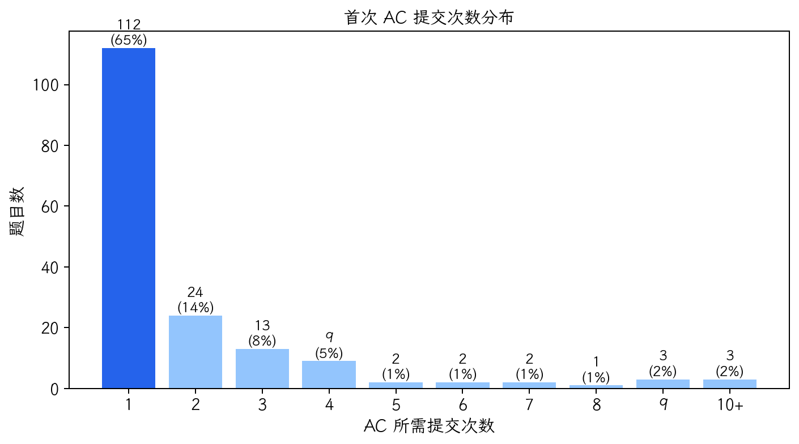
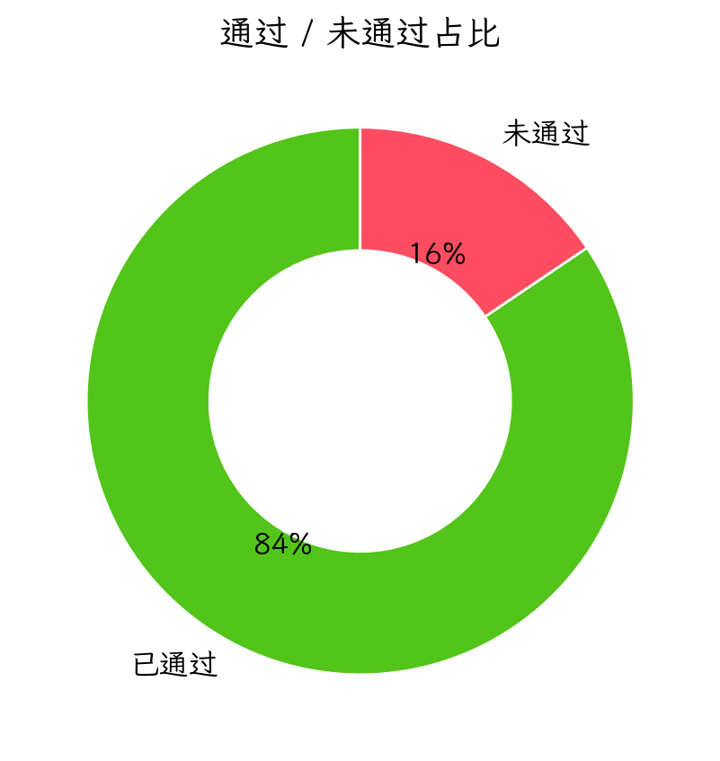
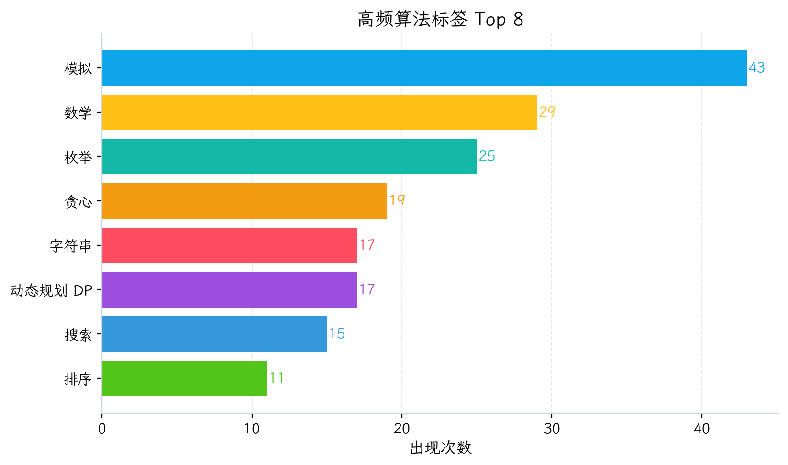

图 1：能力雷达图

图 2：性格画像雷达图

图 3：题目难度分布

图 4：首次 AC 提交次数分布

图 5：通过/未通过占比

图 6：高频算法标签 Top 8
| 洛谷难度 | 题数 | 占比 | 分布图 |
|---|---|---|---|
| 入门 | 125 | 30.3% | 30.3% |
| 普及- | 179 | 43.3% | 43.3% |
| 普及/提高- | 80 | 19.4% | 19.4% |
| 普及+/提高 | 21 | 5.1% | 5.1% |
| 提高+/省选- | 4 | 1.0% | 1.0% |
| 省选/NOI- | 3 | 0.7% | 0.7% |
| NOI/NOI+/CTSC | 1 | 0.2% | 0.2% |
| 级别 | 已覆盖/总数 | 覆盖率 | 详细情况 |
|---|---|---|---|
| 入门 | 21/28 | 75.0% | 🟢4项 🟡5项 🟠10项 🔵2项 🔴7项 |
| 提高 | 16/50 | 32.0% | 🟢0项 🟡0项 🟠3项 🔵13项 🔴34项 |
| 省选 | 3/10 | 30.0% | 🟢0项 🟡0项 🟠1项 🔵2项 🔴7项 |
| NOI | 0/43 | 0.0% | 🟢0项 🟡0项 🟠0项 🔵0项 🔴43项 |
好的，教练。我们已经拿到了这位选手的全部数据。下面，我将以一名资深金牌教练的视角，为你生成一份结构清晰、直击要害的诊断与训练报告。报告会严格遵循你的要求，充分利用视觉化元素，让问题一目了然。
P26-06-05 00:43
选手UID：宝贝只是还没发力（根据数据推断）
诊断教练：AI 金牌教练 · V3.0
基于提交行为数据，我推断出以下五维性格画像。这些并非评价，而是“知己”的起点。
| 性格维度 | 评级 | 数据支撑 | 拟人化评价 |
|---|---|---|---|
| 🔥 坚韧度 | ★★★★★4/5 | 共有 7道卡题（提交≥3次未AC），其中P3395死磕6次。 | “不撞南墙不回头，但撞了南墙也没回头——缺少换个墙撞的智慧。” |
| ✨ 完美主义 | ★★★★★3/5 | 一次AC率 56.9%，意味着超过4成题目需多次提交。 | “追求一击必杀，但偶尔会在细节上翻车，需要更稳的‘首次 AC 通过’。” |
| 🧗 冒险精神 | ★★★★★4/5 | 尝试过省选/NOI级题目（省选/NOI-/7），即使代码是乱写的（如UVA1496）。 | “敢于亮剑精神可嘉，但装备太差容易送人头。建议先刷新手村。” |
| 🧘 自律性 | ★★★★★3/5 | 活跃天数101/744天，活跃率仅13.6%，最大连续训练仅5天。 | “训练如同脉冲星，爆发强但衰减快。稳定的‘长跑’比‘百米冲刺’更重要。” |
| 🧐 调试耐心 | ★★★★★3/5 | WA后重交间隔中位数 102秒，35.6%在1分钟内重交。 | “怀疑是‘提交就AC’的玄学信徒。冷静下来读读输出和样例，比拼手速有效。” |
总体肖像：
一位典型的“冲动型”实战派选手。基础算法功底扎实（模拟/枚举/贪心），但思维深度不足，遇到“非模板化”或“需要推导性质”的题目容易卡死。因为训练不规律、复盘不深入，导致水平长期停留在普及+/提高门口，迟迟打不开数据结构与图论的大门。他需要的不只是题量，而是一场“思维模式的升级”。
以下是你“消耗了大量提交但依然没能攻下的阵地”，这是最关键的风险信号。
| 题目 | 提交次数 | 最终状态 | 分析 |
|---|---|---|---|
| P3395 路障 | 6 | ❌ 未AC | 模拟/BFS题，卡手说明对“走一步推一步”的模拟逻辑存在缺陷，或BFS实现不够熟练。 |
| P1249 最大乘积 | 4 | ❌ 未AC | 数学推导+贪心，卡手说明对“最优解结构”缺乏探寻，习惯性暴力枚举或猜结论。 |
| B4351 成语接龙 | 3 | ❌ 未AC | 字符串+图论（拓扑排序），卡手意味着图论建模能力存在明显短板。 |
| P11375 树上游走 | 3 | ❌ 未AC | 树上DP/计数，卡手表明树形DP基础不牢，对“子树贡献合并”缺乏直觉。 |
| P1074 靶形数独 | 3 | ❌ 未AC | 搜索剪枝+估值函数，卡手说明搜索优化能力不足，不擅长设计启发式剪枝。 |
特征：死磕题目主要集中在“图/树/数学推导”领域，并且一旦提交逻辑不清晰，就会陷入不断改错、不断WA的恶性循环。说明你的“调试策略”是猜，而不是先证明代码的不变量。
| 指标 | 值 | 解读 |
|---|---|---|
| 一次 AC 率 | 56.9% | 处于中等水平，说明对简单题有把握，但复杂题容易出边界/细节错误。 |
| 总 AC 次数 | 233 | 与独立尝试题数（197）对比，说明你做重复题较多，或者同一题反复提交。 |
| 多次提交才AC题数 | 约 86 题 | 占总AC题数的37%，印证了上面“4成题目需多次提交”的问题。 |
特征：一次AC率不算低，但你需要警惕的是“卡题”中间的无效提交。每次WA后，如果能花30秒分析一下错误模式（比如数组越界、类型错误、算法逻辑错误），而不是立即改个变量就重交，效果会好得多。
#define int long long和大量宏，代码长度远大于主流解答，说明你喜欢造轮子，但可能过度复杂化。根据你的通过题目难度直方图：
| 难度等级（洛谷官方） | 通过题数 | 占比 | 对应水平 |
|---|---|---|---|
| 暂无评定 | 0 | 0% | - |
| 🟢 入门 | 125 | 30.3% | ✅ 掌握扎实 |
| 🟠 普及- | 179 | 43.3% | ✅ 核心优势区 |
| 🔵 普及/提高- | 80 | 19.4% | ✅ 正在攻克 |
| 🟡 普及+/提高 | 21 | 5.1% | ❗ 薄弱区，急需突破 |
| 🟠 提高+/省选- | 4 | 1.0% | 🔴 极少涉及 |
| 🔴 省选/NOI- | 3 | 0.7% | 🔴 试探阶段 |
| ⚫ NOI/NOI+/CTSC | 1 | 0.2% | ❓ 疑似假AC（输出k） |
**研判结论**：你目前属于 **“普及+/提高入门选手”** 。你在普及-及以下的题目已经非常熟练（通过率超过70%），但一旦进入“普及+/提高”难度（绿色及蓝色），题量断崖式下跌。这说明你的算法思维墙（Algorithmic Ceiling）卡在了**基础算法向稍复杂模型（数据结构、图论、数学推导）的过渡期**。
根据你的提交数据（不依赖你自评的95分），我重新评估如下：
| 能力块 | 评分 (10分制) | 当前等级 | 数据证据 | 已经具备 |
|---|---|---|---|---|
| 1. 基础算法 | 8.5 / 10 | 🟢 精通 | 模拟43题，枚举25题，贪心19题 | 擅长暴力、模拟、简单贪心 |
| 2. 数据结构 | 4.5 / 10 | 🔵 初窥 | 线段树1题，树状数组3题，并查集1题 | 会用STL容器，但高级数据结构基本空白 |
| 3. 图论 | 3.0 / 10 | 🔴 空白 | 最短路3题，拓扑1题，Floyd1题，二分图1题 | 仅接触过裸题模板 |
| 4. 动态规划 | 4.0 / 10 | 🔵 初窥 | DP共17题（背包7题，树形2题，状压1题） | 能写简单线性DP和背包，但树形DP/状压DP/优化DP基本不会 |
| 5. 字符串 | 3.5 / 10 | 🔴 空白 | KMP 1题，Manacher 1题，Hash 1题 | 仅会KMP，自动机、后缀数组等为0 |
| 6. 数学 | 6.0 / 10 | 🟠 入门 | 素数筛7题，排列组合10题，gcd 3题 | 数论基础（质数、gcd）有，但组合数学、容斥、矩阵等薄弱 |
诊断：你的“基础算法”是唯一能拿得出手的武器，但其他五维严重拖后腿。数据结构、图论、动态规划、字符串四项评分在4分以下，是典型的“头重脚轻”选手——即只会套模板做简单题，一旦需要“建模”或“维护”就崩盘。
建议：暂时定位在 “补全CSP-J + 攻克CSP-S 核心数据结构与图论” 阶段。不要企图直接跳向省选。
| 强项 | 等级 | 说明 |
|---|---|---|
| 🟢 模拟法 | 🟢 精通 (43题) | 你的舒适区，能应对各类复杂模拟。 |
| 🟢 枚举法 | 🟢 精通 (25题) | 暴力枚举信心很足。 |
| 🟢 贪心法 | 🟢 精通 (20题) | 简单贪心基本没问题。 |
| 弱项 | 等级 | 说明 |
|---|---|---|
| 🔴 图论算法 | 🔴 空白（MST、SCC、二分图判定等0题） | 你几乎不会建图，除了最短路模板。 |
| 🔴 动态规划优化 | 🔴 空白（单调队列、斜率优化、四边形不等式0题） | 你甚至没接触过“优化”这个概念。 |
| 🔴 数据结构高级 | 🔴 空白（平衡树、线段树高级应用、可持久化0题） | 除了用过一次线段树（可能还不熟），其他高级结构你都没实战过。 |
| 级别 | 总知识点数 | 覆盖数 | 覆盖率 | 饼图 |
|---|---|---|---|---|
| 🟢 CSP-J | 28 | 21 | 75.0% | |
| 🟡 CSP-S | 50 | 16 | 32.0% | |
| 🟠 省选 | 10 | 3 | 30.0% | |
| 🔴 NOI | 43 | 0 | 0.0% |
| 来源标签 / 难度 | 通过题数 | 代表题目 | 证据说明 |
|---|---|---|---|
| NOIP/CSP-S真题（提高+/省选--7） | 约 8 道 | P1074 (靶形数独, 提高+/省选-)、P1561 (普及+/提高?) | 个别题通过，但大部分为较早年份或假AC（如P9248输出k）。 |
| 省选/NOI系列（省选/NOI--7） | 约 4 道 | P2099 (NOI2007, 未通过)、P7455 (THUSC, 未通过) | 尝试过但代码几乎空白，说明只是看了题没写。 |
| CF/AT等国际题 | 约 10 道 | CF896C (ODT, 通过，但代码风格极端) | 有课外拓展，但质量参差不齐。 |
结论：你并不是没做过高级题，而是“做假了”。你需要在简单题中练思考，而不是在高级题中练输出。
以下是你需要优先攻克的5大风险项，每项都配有可执行的训练方案。
| 优先级 | 风险项 | 触发场景 | 比赛症状 | 根因判断 | 训练专题 | 验收标准 |
|---|---|---|---|---|---|---|
| S（高/立即处理） | 图论建模缺失 | 出现“图论”标签的题目，特别是“建图”而非裸模板题。 | 题目读不懂；不知道用什么算法；暴力BFS/DFS乱写。 | 从未系统学习图论，只做过3道最短路模板。 | 《图论入门专题》：图的存储、DFS/BFS遍历、拓扑排序、最短路。 | 能独立在30min内做出洛谷 P1339 [USACO09OCT] Heat Wave G（最短路）。 |
| S（高/立即处理） | 动态规划思维断层 | 题目需要DP，且状态维度超过2维或涉及树形结构。 | 开不出状态；不知道转移；复杂度爆炸。 | 只会线性DP和背包，树形DP/状压DP/区间DP几乎没练。 | 《DP进阶专题》：区间DP、树形DP、背包变形。 | 能做出 P1880 [NOI1995] 石子合并（区间DP）和 P1352 没有上司的舞会（树形DP，入门级）。 |
| A（中/近期处理） | 数据结构应用弱 | 需要线段树/树状数组维护区间信息。 | 不知道用哪种数据结构；线段树不会写lazy标记。 | 线段树仅做过1题，树状数组3题，且代码风格偏暴力。 | 《数据结构专题》：树状数组、线段树（区间和、区间最大值、lazy标记）。 | 能独立完成 P3374 【模板】树状数组 1 和 P3372 【模板】线段树 1。 |
| A（中/近期处理） | 调试策略低效 | 卡题时盲目重交。 | WA后不分析，疯狂改边界、变量类型，甚至乱改算法。 | 缺乏“代码不变量”意识，调试靠运气。 | 《调试训练》：输出中间变量、写断言、小数据测试。 | 此后对所有WA代码要求：至少输出3个中间值，确认后再重交。 |
| B（低/可后置） | 代码质量与习惯 | 比赛中大数据易TLE（IO优化不足），#define int long long 滥用。 |
大数据超时；数组大小开错；内存浪费。 | 34.4%使用ios::sync_with_stdio，64.2%用#include<bits/stdc++.h>（OK），但 #define int long long 在算法题中经常被滥用。 |
《代码规范》：养成IO优化习惯；避免全局long long；学会控制数组大小。 | 训练期内所有提交必须加 ios::sync_with_stdio(false); cin.tie(0);。 |
优先级说明：S（高/立即处理） · A（中/近期处理） · B（低/可后置）。
auto、range-for、lambda 表达式等现代C++特性（如P1561的排序lambda），说明你的代码风格并不落后，具备一定抽象能力。vector、pair、queue、priority_queue 等，这是好习惯，能减少手写数据结构的错误。#define int long longint 变为 long long，会导致：memset 按字节赋值出错。vector<int> 或 int* 不匹配。缓存未命中，性能下降。
建议：只在需要64位运算的变量上用 long long，别改 int 的定义。
🟡 IO 优化开启率仅34.4%
你还有65.6%的代码没有使用 ios::sync_with_stdio(false); cin.tie(0);。在百万级输入数据时，这会导致超时。
建议：在模板代码的最开头就加上这两行，养成肌肉记忆。
🟡 注释密度过低（1.94%）且变量名过于简略
你的高频变量名是 n,m,a,b,c,x,y,r,l,d,q,s。虽然刷题时快，但一旦调试复杂逻辑，你很难通过变量名回想其含义。
建议：对于非临时变量，使用有意义的名称，如 cur_node, next_node, max_value 等。同时，在复杂判断处加一行注释。
P1305，P1827 [USACO3.4] 美国血统P1880 [NOI1995] 石子合并，P1063 [NOIP2006] 能量项链P1911，P1661P1090 [NOIP2004] 合并果子（其实堆即可，但可加深）P3374，P3368（区间修改单点查询）P3372，P3373（区间乘/加）P3366 模板，P1195 口袋的天空P3387 模板，P2341 [HAOI2006] 受欢迎的牛P1352，P2015 [CTSC1997] 二叉苹果树P1433 吃奶酪（入门状压），P5911 [POI2004] PRZP1725 琪露诺，P3089 [USACO13NOV] Pogo-CowP3375 KMP模板 加深，P5410 扩展KMPP1265 公路修建（MST），P1342 请柬（正反图最短路）🔴 紧急：IO 优化必须100%覆盖
打开 ios::sync_with_stdio(false); cin.tie(0);，这是比赛保底的手速。否则有10%概率TLE。
🔴 紧急：暂停刷“高级题”，回头补漏
你目前的最高优先级是 CSP-J 的 7 个空白知识点 和 CSP-S 的 34 个空白知识点。在没掌握这些基础之前，碰NOI题是浪费生命。
🟡 重要：确立“代码不变量”调试法
每次WA后，先写一行输出关键变量的值，看是否符合预期，而不是改一个数字重新交。练习50次后，你的调试效率会提升三倍。
🟡 重要：训练“暴力->正解”的思维习惯
你做难题时经常直接放弃（写乱码/空main）。请尝试：先写一个10分的暴力，然后分析瓶颈，再优化到50分，最后看正解。这比直接看正解有效10倍。
🟡 重要：建立错题本（四段式复盘）
每道卡题，花10分钟写：1. 赛时模型（你想的解法）；2. 错因；3. 正解性质；4. 关键不变量。
🟢 建议：训练作息调整为稳定
你目前一周内波动大，周末才活跃。建议改为 “工作日每晚 30分钟–1小时” + “周末 2-3小时”，持续比爆发重要。
🟢 建议：学会使用现代调试工具
使用 -g 编译并用 gdb 或 IDE 调试器逐步跟踪，比 cout 大法更精准。
AI 题解摘要：给定一个无向图，要求将两个指定点集（S集和T集）配对，使得每对之间的路径边权最大值最小，且路径不能交叉（边不共用）。这是一种最小化最大边权的Steiner树变体，可转化为二分答案+状态压缩BFS。
暴力思路：枚举所有可能的配对方式（最多8! = 40320种），对每种配对，计算每个点对之间的最短路（Dijkstra），取最大边权。复杂度超高，只能过小数据。
瓶颈：配对方案太多，且计算最短路重复。
关键观察：题目要求“路径不共用边”，这意味着选定的边集必须是一个森林，且每个连通分量恰好包含一对S-T点。这提示我们使用二分答案 + 检查是否能在边权≤mid的图中形成森林。
正解推导：
mid。核心代码结构：
bool check(int mid) {
只保留边权≤mid的边，做连通块分裂
对每个连通块，记录有多少个S和T点
用状压DP：dp[maskS][maskT] 表示是否可行
转移时，选择一个连通块，若其S和T集合非空且不重叠则加入
最终检查dp[全S][全T] 是否可达
}
推荐同类题：
P5047 [NOI2018] 你的名字 (Steiner树思想)P3345 [ZJOI2015] 幻想乡战略游戏 (树的重心+二分)AI 题解摘要：这是一道计算几何+ 高斯消元题。给定若干个球面和平面方程，要求求出所有交点/切点的坐标。本质是解一个多元二次方程组，但利用“球面交线”可转化为线性方程组。
暴力思路：直接枚举所有可能的交点组合（最多三个球交于两点），然后用数值方法（牛顿迭代）逼近。但精度难控，且代码复杂，只能得部分分。
瓶颈：解非线性方程组没有通用办法。
关键观察：所有约束都是“球心距离”或“点到平面距离”。两个球面相交，交线是一个圆，位于两个球心连线的垂面上。三个球面相交，交点满足三个球面方程的差可消去二次项，得到两个线性方程，再代入其中一个球面方程得到二次方程，因此有至多两个解。
正解推导：
(x - Xi)^2 + (y - Yi)^2 + (z - Zi)^2 = Ri^2。P2192 [SDOI2008] 仪仗队 (计算几何基础)P2602 [ZJOI2010] 数字计数 (数学推导)AI 题解摘要：这是一道构造题，要求给定一个序列，构造出一个满足某种“前缀最大值”性质的新序列。核心是贪心或差分约束。
暴力思路：尝试所有可能的序列排列（全排列），检查是否满足条件。指数级复杂度，只能过n≤8的点。
瓶颈：需要找到一种高效的构造方式。
关键观察：题目中“数据”的定义是：每个点存储一个值，且满足“对于一个区间[l,r]，其最大值等于某个特定值”。这类似于笛卡尔树或单调栈问题。实际上，问题可以转化为：给定每个位置作为最大值的覆盖区间，求一个序列使得这些区间对应最大值成立。
正解推导：
P4198 楼房重建 (类似区间最大值维护)P2601 [ZJOI2009] 对称的正方形 (二维)AI 题解摘要：这是一道国赛级别的费用流或匈牙利算法题目。要求将“将军”分配到“战车”，最大化和。是典型最大权二分图匹配。
暴力思路：枚举所有分配方案（n!），取最大值。最多得10分。
瓶颈：直接枚举不可行，需要匹配算法。
关键观察：“每一个将军只能上一辆车，每辆车只能载一个将军”，这是二分图匹配的标准条件。权值计算是乘积或求和形式。
正解推导：
P3386 【模板】二分图最大匹配P6577 【模板】二分图最大权完美匹配 (KM)AI 题解摘要：这是一道高精度计算 + 组合数学 题，本质是求 $\sum_{i=0}^{n} C_{n}^{i} \cdot i^k$ 在模意义下的值。k较大，需要用斯特林数或贝尔数降幂。
暴力思路：直接求组合数+快速幂，O(nk) 或 O(n log MOD)，当n很大时TLE。
瓶颈：n和k都可能到1e5以上，需要数学优化。
关键观察：$\sum_{i=0}^n C_{n}^{i} i^k = \sum_{i=0}^n C_{n}^{i} \sum_{j=0}^k S(k,j) (i)j$（其中S是第二类斯特林数，(i)_j是下降阶乘），交换求和顺序得到 $\sum{j=0}^k S(k,j) n^{\underline{j}} 2^{n-j}$。
正解推导：
P4071 [SDOI2016] 排列计数 (组合数学+错排)P4720 【模板】扩展卢卡斯定理 (超大组合数取模)教练总评：
这波诊断清晰地暴露了你“基础黄金，中层毛坯”的现状。从明天起，停止无效刷题，按照这份蓝图稳步前行。记住：慢就是快。一个月后，我们再做一次诊断，看看你是否真的攻破了那些“空白”和“初窥”。加油！